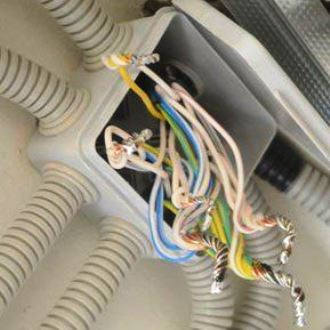
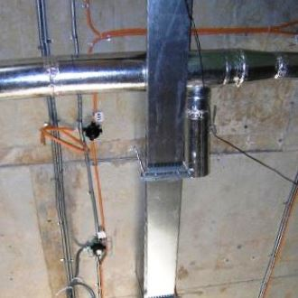
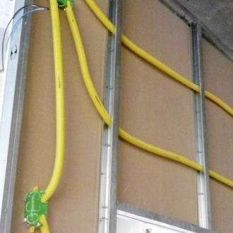

Качественный электромонтаж в Санкт-Петербурге и ленобласти, стаж 12 лет. Частный электрик, недорого и качественно.
Тел. 8 904 642 08 57 Николай.

Проводка под гипсокартонном.
Услуги опытного электрика-профессионала востребованы. Но порой бывает сложно найти специалиста, который сможет сделать работу быстро и гарантирует качество на высоком уровне.
Но Вы попали именно туда, куда нужно.
Я – электрик с большим опытом работы, готовый выполнить любые задания, профессионал, привыкший соблюдать общепринятые стандарты и правила, нормы безопасности.
При этом цена услуг вполне доступна.
Вы можете рассчитывать на качественную работу по ремонту осветительных приборов и узлов, прокладке проводки под гипсокартоном или штукатуркой и т.п. Возможен выезд в выходные дни, праздники или поздно вечером.
Сколько стоит сделать проводку под гипсокартонном.
Вариант квартиры. |
Цена за проводку под ключ в руб. |
1 комнатная. |
От 25000 |
Двухкомнатная. |
37000 |
Трёхкомнатная. |
48000 |
Четырёхкомнатная. |
55000 |
В новостройке. |
От 700 руб. за кв. м. по полу. |
В кухне. |
7000 |
В комнате. |
От 6000 руб. |
Следует остановить внимание на работах с проводкой. Ведь это ответственное дело, которое требует теоретических знаний и достаточных практических навыков. Если отнестись к задаче халатно, то пострадает осветительная система и само здание или даже его обитатели. Поэтому проводка под гипсокартоном должна укладываться специалистом. Все это я беру на себя и выполню работу с ответственностью.
Когда можно укладывать провод под гипсокартоном.
Укладывать проводку нужно уже тогда, когда выставлены профили под гипсокартон. Так выполнить задание будет проще. Важно соблюдать все нормы пожарной безопасности, особенно если работа проводится не в жилом доме или квартире, а в помещении офиса, магазина, цеха, склада и т. п. Так удастся уберечься от возгорания и возможных проблем с контролирующими органами. Провода или кабели, использующиеся в процессе монтажа, обязательно нужно накрывать. С этой целью можно применять гофры либо специальные планки. Защита такого типа должна быть либо металлической, либо негорючей пластиковой с маркировкой НГ. При этом должны использоваться исключительно изолированные носители, которые не распространяют горение и характеризуются низким уровнем дымовыделения и высокой способности газоотвода.
Планировка проводки под гипсокартоном.
После подготовки материалов нужно определить место нахождения проводки и разметить точки крепления, а также места выхода розеток, выключателей. Можно нарисовать линию, по которой и будут проходить все провода. Лучше располагать проводку вертикально между точками электропотребления. Не рекомендуется располагать все точки горизонтально, но если другого выхода нет, то они хотя бы должны быть на одной высоте.
По размеченным линиям проводка в гофре прикрепляется к стенам. После этого на листах гипсокартона нужно разметить отверстия под подрозетники. Лучше вырезать их заранее, так как это удобно. Не нужно делать запасов. Коробки должны располагаться в данных отверстиях плотно. Теперь можно устанавливать листы гипсокартона обычным образом, скрывая под ними проводку.
В коробке розетки нужно зафиксировать лапки винтиками после вывода проводов. Окончательное подключение всех точек потребления энергии можно производить тогда, когда выполнены работы по отделке помещения. Если розетки располагаются низко, их нужно закрывать специальными заглушками, защищая от маленьких детей и домашних животных.


Сколько будут стоить материалы.

